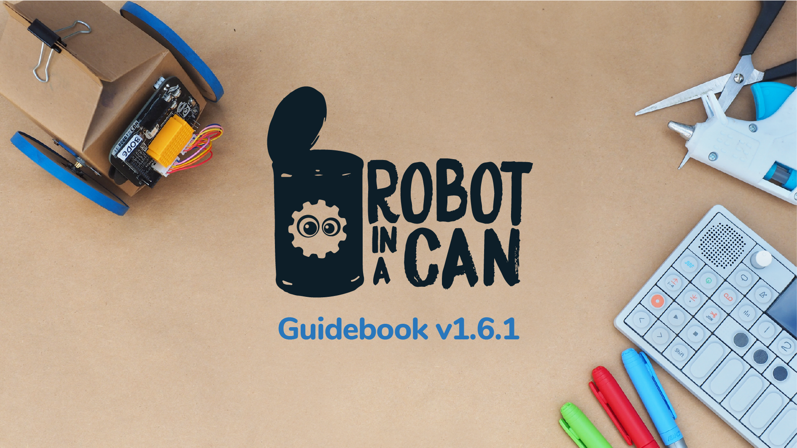
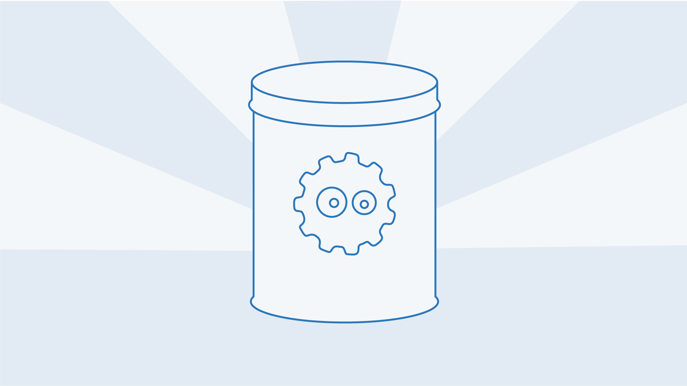

Guidbook 1.6.1

Dedicated to: Motsumi, Siamela, James, & Eva.
Table Of Contents
Guidbook 1.6.1Dedicated to: Motsumi, Siamela, James, & Eva.1. IntroductionExamples of what you can build and doGet familiar with what, and how people are making!Website Resources:Concept VideosMaking Things With MicrocomputersWhat's In The Can? NEEDS new imageThe 1.6v Robot in a Can eBrainTwo Stepper Motors. Cardboard robot designs.LEDsResistorsPotentiometerUltrasonic Distance SensorPatch CablesBattery PackWhat's On The BoardOn the front:On/Off Switch:GPIO Pins:Power Port:USB Port:SPI Port:Connection Bay Pins:Breadboard:Motor Driver:Servo Motor:RGB LED:Light Sensor:D-Pad:On the back:ESP8266: Getting started How to ConnectQuick start!Snap! For Real Power! Step 0: Download Snap!Step 1: Unzip and Open Snap.htmlStep 2 - Turn the eBrain OnStep 3 - Connect the eBrain to Snap!192.168.4.1, What is that about?Building The RobotThe Cube RobotProgramming The RobotDrawing With The RobotProgramming With Snap!Circuits and ElectricityThe History of Electricity & MagnetismWhat is Electric Flow?BatteriesMaking CircuitsUsing The BreadboardBlinking the LEDGeneral Purpose Input OutputWhat is a Computer?Input and OutputLED OutputButton InputBinaryAnalog InputPulse Width ModulationRobot in a Can ProjectsBrick Breaker GamePong GameAsteroids GamePhotovore RobotUltrasonic Sensing RobotComponent Dictionary of Sensors and ExtrasLight SensorPotentiometerRGB LEDUltrasonic Distance SensorRelayTemperature sensorsExtra ResourcesTroubleshooting GuideChanging Language SettingsUsing the eBrain with Arduino<!--Downloads and Open Source Materials-->
1. Introduction
Imagine the year is 2184... Since the collapse of society the people of earth are faced with the complex challenge of understanding the technology of days past. What is inside computers is a mystery, and the secrets of these technologies have been mostly forgotten. A two young mages are out walking when all of a sudden, in a blinding flash of light a can comes out of nowhere. It appears this is a can sent to you from the future...
Inside the can you find a note. The note says:
Hello fellow traveler,
You have been selected to save the world. It is your responsibility to use technology wisely for the betterment of humankind! We have sent you a care package from the future.
Take this ROBOT-IN-A-CAN, read this manual, save the human race! This can is a key. It contains a small computer that will help you unlock the secrets of technology and electronics. Learn to wire circuits. Reuse materials to build something new and reinvent the world of the future.
-RIAC SFTF
This is the moment you have been waiting for. The future is in your hands... UCAN
Examples of what you can build and do
Get familiar with what, and how people are making!
These websites are full of tutorials on how to use certain technologies in your projects, and complete project builds with step by step instructions. People have made all kinds of things for all types of purposes and posted them on the web for you to follow. I recommend looking through these websites when you need inspiration or are looking to figure out how you might want to solve a design challenge.
Website Resources:
https://www.instructables.com/ https://www.hackster.io/ https://hackaday.com/ https://www.arduino.cc/ https://learn.adafruit.com/ https://learn.sparkfun.com/ https://www.geekfactory.mx/ http://breakerslab.org https://www.howstuffworks.com/ https://makezine.com/
Concept Videos
Here are some videos of a couple of popular technologies and trends. Pay close attention to the mechanisms used in these projects and how you could apply them in different ways that are new and innovative. Get some ideas, and keep searching! There is so much awesome content out there and so many ideas you can research! Maybe you even have some ideas so unique they have never been done before…

Making Things With Microcomputers
Our main component in the can is The eBrain. It is a small computer known as a microcontroller.
Microcontrollers are small computers that are at the heart of many consumer products, and other computer automated devices. These small computers can be found in microwaves, dishwashers, Bluetooth speakers, cars, farm equipment, industrial machines, medical appliances, alarm systems, smart watches, trains, airplanes, coffee machines, exercise equipment… and more! Wherever computer automation and sensors could improve a product or appliance, you can find a microcontroller.
Fact: Did you know most cars have more than 27 different microcontrollers built-in? These little computers can control anything from the Automatic Breaking System to the windshield wipers.
The Robot In A Can microcontroller is called the eBrain. The eBrain has WiFi radio built-in, allowing us to connect to it. It can be remotely programmed and controlled using just a web browser! The eBrain can also store and retrieve data online.
What's In The Can? NEEDS new image

You begin to remove the contents of the can to see what is inside…
There are parts for building a robot. Two Motor Chassis and four Motor Holders. These parts hold the motors in place to make robots.
There are two Wheels that attach to the motors. They also have rubber band tires!
The 1.6v Robot in a Can eBrain
The Robot in a Can eBrain is a Microcontroller, a small computer used to program robotic projects. This teeny programmable computer has a WiFi radio on it so it can send and receive signals from another computer.
Two Stepper Motors.
These motors are very accurate! They are the kind you might find in a printer, a 3D printer, or even a CNC machine (a robot machine that builds machines). Each step they take is just 1/64 of a full rotation, this means you can make robots that go through mazes and all kinds of cool projects that require precision movements.
Cardboard robot designs.
** Fold these up to make some robots! ** Also you can print your own, or design your own!
LEDs
Light Emitting Diodes, this are lights that only lets electricity pass in one direction.
Resistors
Resistors limit current flowing through a circuit to make sure your don't give too much electricity to a component. They can also prevent short circuits! These components help make your circuits work.
Potentiometer
A Potentiometer or Variable Resistor is a dial that you can turn, like you might find in the volume dial on a car stereo. A great component for controlling things with a twist.
Ultrasonic Distance Sensor
An Ultrasonic Distance Sensor, this sends out an ultrasonic wave then waits to see how long it takes for the wave to bounce back. It can detect objects up to about 100cm away, if they are solid enough for it to reflect sound.
Patch Cables
Patch cables, are wires made of metal and plastic which we will use to make circuits.
Battery Pack
The Robot in a Can runs on 4 X AA batteries and uses this Battery Pack.
What's On The Board

This is the 1.6v Robot in a Can eBrain. Let us look at its parts.
On the front:
On/Off Switch:
Turn it on, but don't forget to turn it off when you're done!
GPIO Pins:
General Purpose Input/Output pins. These connector pins are wired directly into the computer on the chip. Connecting wires into these holes allows you to connect components straight to the center of the eBrain, the computer.
Power Port:
Plug the battery pack here.
USB Port:
This lets you connect an FTDI USB programmer so you can program your kit like an Arduino. This is a bit advanced but it means that you can use your kit for even more advanced projects later on.
SPI Port:
This is for connecting advanced complex sensors, displays, and other complex external devices.
Connection Bay Pins:
Use these pins to connect the GPIO pins to the different components on the board. The connection bay connects to the four buttons, the RGB LED, and the Light Sensor.
Breadboard:
This brightly colored plastic rectangle is made up of a grid of holes. This allows you to connect components from outside of the board by simply snapping them in.
Motor Driver:
Control two stepper motors using this motor driver. Very useful part for making things move with precision.
Servo Motor:
This is for a Servo Motor, that can move with precision up to 180 degrees.
RGB LED:
Red Green and Blue Light Emitting Diode. You might know the primary colors as Red Yellow and Blue… but with light the primary colors are different. These colored lights can be mixed to make over 200 different colors.
Light Sensor:
This electronic eye can see light. It is like a gate that opens wider when photons (light) hit its surface. See the amount of light that comes in and use it to make instruments and all that kinds of things.
D-Pad:
Wire up the buttons use and check out how each button is numbered. These four buttons are positioned to make a game controller. Use it for games, or all kinds of stuff. They are switches that can stop or start the flow of electricity. The buttons are wired up to the four connector pins nearby, one button for each pin.
On the back:
ESP8266:
This is the CPU that controls all of the electronics. It is the thinking part of the eBrain. You can see a squiggly line on the end of this chip, that is the WiFi antenna for radio communication with other computing devices. There is also a blue light that will flash when the chip turns on.
** Special Note** This CPU has lots of tiny metal legs, these legs are connected to the GPIO bay on the other side of the board. It is through these legs that the computer can control other devices. You can see the connections on the circuit board, those lines are like little super thin wires on the glued to the surface of the board!
Getting started

How to Connect

Quick start!
When getting started you can connect directly to your Robot in a Can's eBrain via WiFi and start programming ASAP using eBrain Basic Blocks. To do this pop in your batteries and power on your Robot. Connect to your Robot's WiFi and open a web browser. In the address bar, go to: 192.168.4.1. This is the IP address for your Robot's eBrain.
Snap! For Real Power!
Step 0: Download Snap!
Step 1: Unzip and Open Snap.html
You will need to Unzip the file after you download.
Open the folder and click on Snap.html Please open using Google Chrome.
Step 2 - Turn the eBrain On
- Place 4 x AA Batteries in back of the eBrain
- Locate the on switch and turn the kit on
Step 3 - Connect the eBrain to Snap!
Look for the 4 Letters and Numbers at the back of your e-brain, this same address with appear in the WiFi network, use it to identify your kit
Check your WiFi connections and check for the eBrain WiFi Network (You may have to refresh your connections) Connect to the WiFi network of your kit. You may see that your Internet connection is limited, this is normal since you are not connected to the Internet, rather you are connected directly to your kit


You are now connected! Its time to start Coding…


192.168.4.1, What is that about?
That number is the Internet Protocol address or IP address of the eBrain. This address lets Snap know how to communicate with the eBrain. It’s like a phone number for Snap to chat with the eBrain, and they can send and receive information between them. When you connect directly to the eBrain over WiFi the eBrain uses the number 192.168.4.1
This is its ‘phone number’ on the eBrain WiFi network. The eBrain can also connect to other networks. You can set it up to connect to your home WiFi. If it does it will have a different ‘phone number’ or IP address on that network, because on other networks that number is given out by a router (you know the black box that gives your house WiFi) and the router gets to choose the address of each computer connected to it.
Building The Robot
The Cube Robot


Programming The Robot


Drawing With The Robot


Programming With Snap!
We use Snap! to drag and drop code blocks in sequence. The order of the blocks will determine the order in which the commands happen.
Making programs with snap is like making a list of commands. The first thing on the list will happen first then the second, and so on…
Some Snap! blocks are designed to have other blocks placed below or within them. Here are a few important blocks…
In yellow you can see the some Control examples, the If/Else Block can be used to make decisions based on the evaluation of a statement
In green you can see an example of Operators, the Greater Than Block this block lets you make comparisons or do math
In blue you can see some Movement blocks, the GoTo Block can be used to put your sprite back in the center of the screen. Use this if your sprite gets lost Note: a sprite is the little image object on the screen
NOTE: When following code diagrams, the color of the block shows which section it came from!
For more information about snap consult: https://snap.berkeley.edu/SnapManual.pdf


To Load a project, you can simply drag an.xml file onto the Chrome browser window where Snap! Is open. Or select ‘Import…’ from the file menu.
To save an existing project, go to the top left menu, click on the File button save with desired name and then select Export project... This will create a file with a .xml extension that represents your project.
Circuits and Electricity
The History of Electricity & Magnetism
What is Electric Flow?
Batteries
Making Circuits

Using The Breadboard

To assemble circuits, you can use the breadboard. A breadboard is a device that allows you to make connections between components, without having to solder!
These are connected with vertically in like this.
+ side of the LED goes to 3.3V
- side of the LED goes to GND
Blinking the LED
General Purpose Input Output

Snap! uses English as a default language. But you can use other supported languages too. To change languages, go to the top left
A Microphone is an example of an Input device
Speakers are an example of an Output Device
Each of these connections can be used to read or to write information. Each pin can send electricity, or shut the flow of electricity off, AND listen for when external devices send information. We can control the GPIO Pins like little switches and turn them on or off using the programs we write.
Writing is a way for you to produce information (Output).
Reading receives information (Input)
Can you think of other I/O devices?
What is a Computer?
Input and Output

LED Output


Button Input


We can use a read to check if the button is sending power into pin 4. We need pin 4 to be off in order to read (gpio_off). It should send a 1 when the button is pushed, and 0 when it is not.
We are going to use an ‘if’ statement to teach the computer to make a decision.
IF something is true THEN do something. For example, IF the button is pushed THEN move the sprite on the stage.
IF this is true...
THEN do this...
We will need to run this code in a forever loop so that it’s doesn’t stop checking if the button is pushed... Can you make a game controller?
Binary

Binary is the language computers speak. It has only two words, 0 and 1. Even something as complex as a video can be encoded into two symbols: 1 or 0, True or False, On or Off, High or Low. Computers can send binary electrical signals (waves) that turn on and off really fast. That is called a digital signal and it looks like this:
When the button is pressed, or the LED is on the graph will appear at 1.
When the button is not pressed, or the LED is off the graph will appear at 0.
Binary encoded messages can have uneven timing.
When the wave is up (+5V) then it is On, True, 1.
When the wave is down (0V) it is Off, False, 0.
Analog Input


Pulse Width Modulation

We have learned about analog and digital signals. When you think of a light, you can switch it On or Off, which represents a digital signal. But, you can also dim or fade lights by sending a range of values that represent different intensities (analog signal output). This is what PWM allows us to do: simulate an analog signal through digital means. This is achieved by pulsing electricity at full voltage for a split second then turning off for a different length of time.
Here you can see a PWM signal. Most systems will average out the amount of electricity they receive when it comes in pulses. So if I send 3.3V in pulses and only keep it on 50% of the time, it is like I am sending 1.65V (half of 3.3).
So the computer can’t send 1.65V... only 3.3v or 0... but we can simulate that voltage output using PWM.
Robot in a Can Projects
Brick Breaker Game
From The Snap! Projects folder in the folder found in the folder with Snap! Wire the potentiometer as shown then drag and drop the Brick Breaker program onto Snap! Use the potentiometer to play Brick Breaker!
Pong Game

Asteroids Game
To Load a project, you can simply drag a Snap project .xml file into the Chrome browser window where Snap! Is open. Alternatively, go to top left menu, click on the first icon/button and select Import… After you locate your file on your computer, your project will be loaded.
Find Astroids.XML in the Snap! projects folder and drag it onto Snap!
Wire the eBrain:
To fire at the asteroids put your finger over the light sensor!
Tip! The Snap! Projects folder comes with the software you downloaded.
Photovore Robot

Ultrasonic Sensing Robot

Component Dictionary of Sensors and Extras


Light Sensor

Potentiometer
RGB LED

Ultrasonic Distance Sensor
Relay
use the eBrain to turn on a single existing appliance that is up to 250volts and 10amps (Like a coffee machine, a fan, a light, a pump…etc )
Temperature sensors
Digital Temperature and Humidity Sensor
Extra Resources
Troubleshooting Guide

Changing Language Settings

Snap! uses English as a default language. But you can use other supported languages too. To change languages, go to the top left menu, click on the Settings button (little gear icon). Then, select Language and select your preferred language.
Using the eBrain with Arduino


Open the Boards Manager
- Tools > Board menu > Boards Manager
Search for esp8266...
Select version 2.3.0 from the drop-down.
Click Install.
You will need an FTDI programmer to upload code onto the chip. You must put a cable connecting Pin 0 to GND before you turn the chip on so that it will boot into programming mode. Turn the power off, then plug in the programmer. It will power on while the switch is off. Don’t forget to select the ESP8266 as the board you are programming.